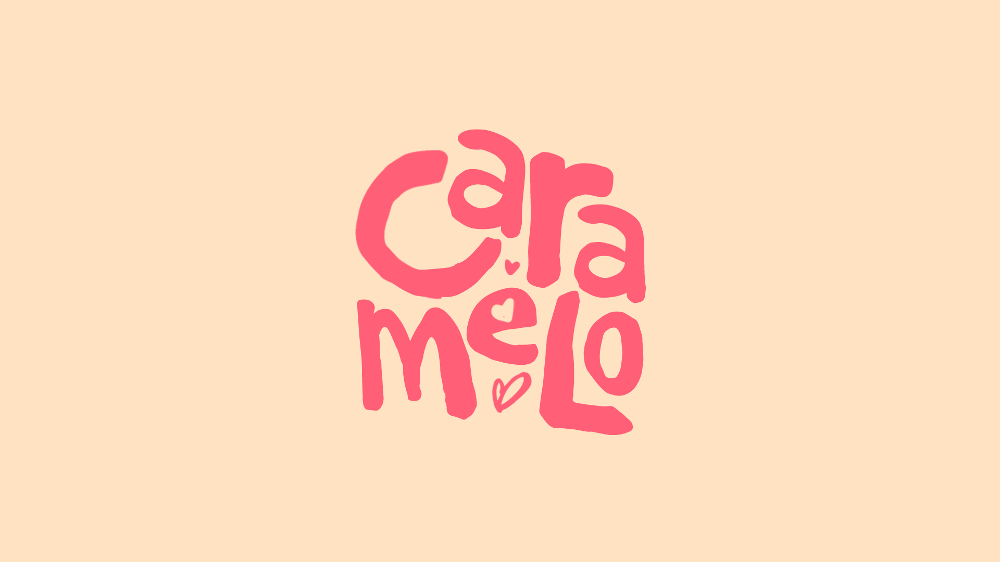
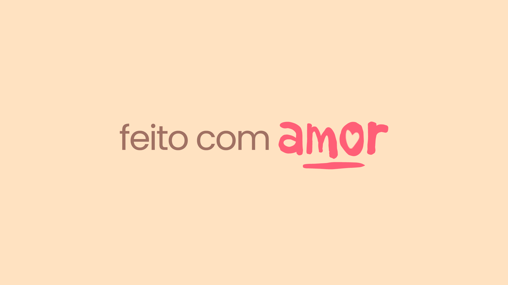
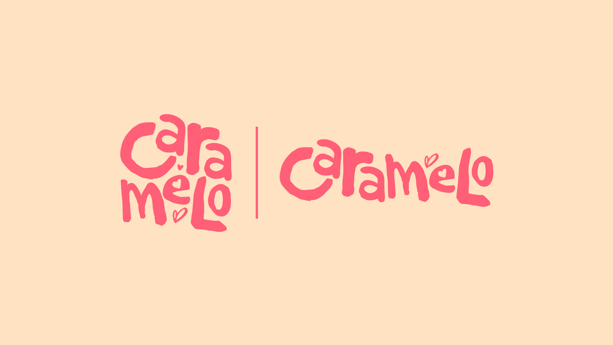
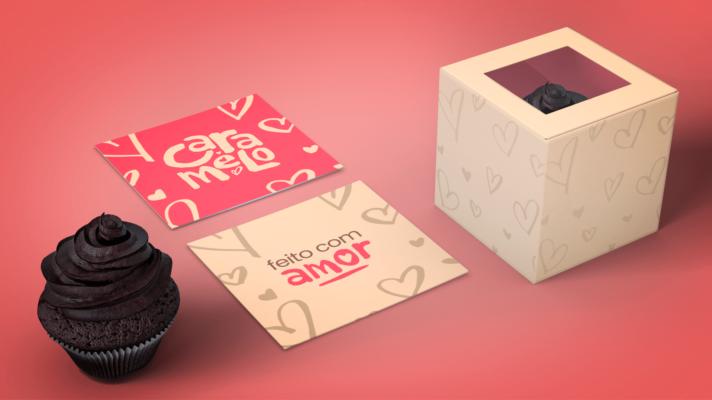
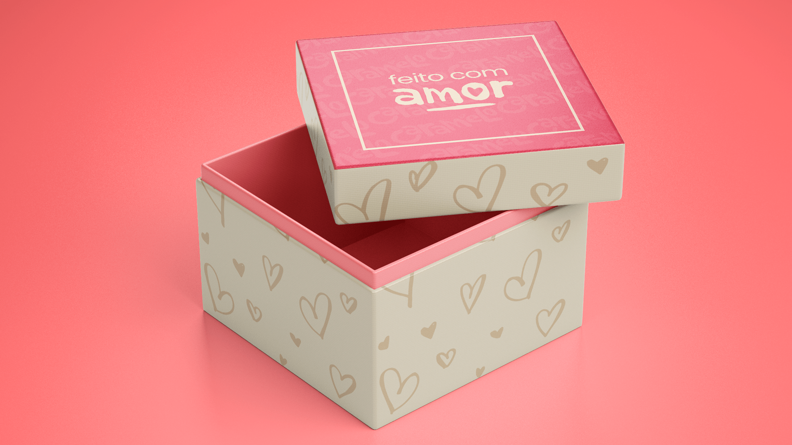
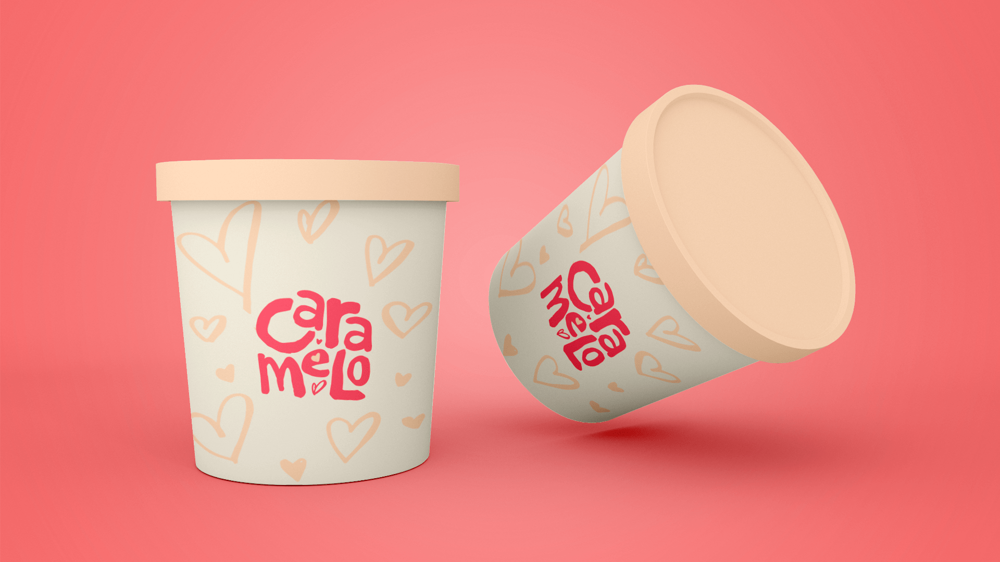
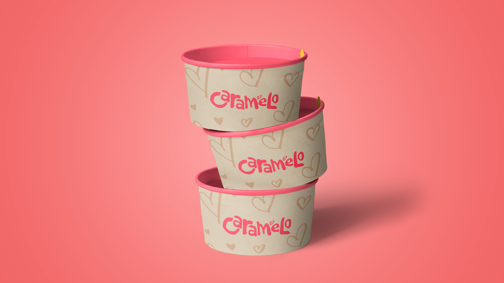
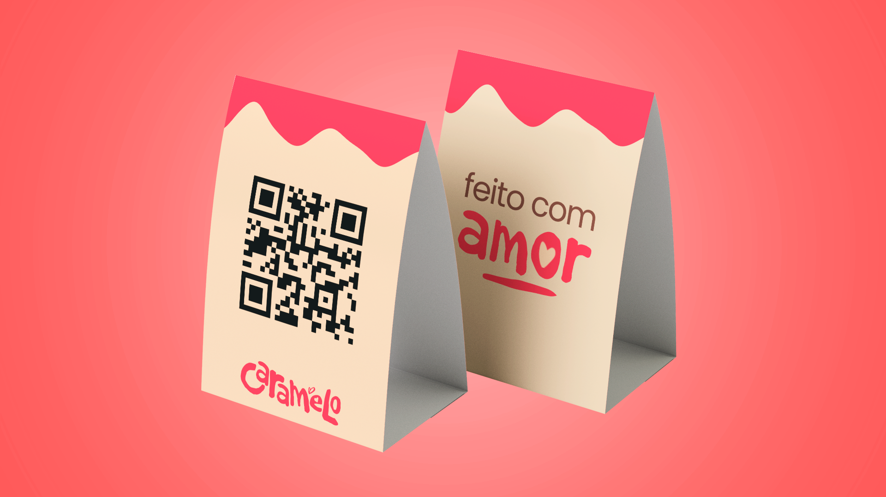

Simples
Uma linguagem direta e espontânea, fácil de reconhecer e de aplicar.
09 — Caramelo

Contexto
A Caramelo nasceu do desejo de transformar a paixão por doces em um negócio com identidade própria. O desafio era traduzir esse universo artesanal em uma marca contemporânea, sem perder a sensação de intimidade, gentileza e carinho associada ao produto feito à mão.
A identidade foi construída para aproximar marca e público por meio de uma linguagem visual espontânea, calorosa e reconhecível.
Conceito
O conceito parte de uma marca simples e humana, com traços irregulares e pequenos corações que reforçam o caráter artesanal. A intenção não era parecer excessivamente refinada ou distante, mas criar uma presença visual com personalidade e afeto.
Essa lógica se estende da assinatura principal às embalagens e mensagens da marca, formando um sistema em que produto, identidade e experiência falam a mesma linguagem.
Uma linguagem direta e espontânea, fácil de reconhecer e de aplicar.
O afeto aparece nos detalhes e transforma o doce em gesto de carinho.
Poucos elementos visuais sustentam o sistema sem competir com o produto.
O lettering manual dá voz, personalidade e presença à identidade.
Rosa e creme constroem uma atmosfera leve, acolhedora e otimista.
Linguagem da marca
A linguagem verbal foi incorporada ao sistema visual para reforçar o posicionamento artesanal. A palavra “amor” recebe o mesmo tratamento gestual da marca e se torna um elemento gráfico capaz de aparecer sozinho ou combinado com outras mensagens.
Essa aproximação cria consistência entre o que a Caramelo diz e a forma como ela se apresenta.

Sistema de marca
A marca possui composições vertical e horizontal, permitindo adaptar o lettering às necessidades de embalagem, etiqueta, peça gráfica ou aplicação digital sem perder reconhecimento.
Os pequenos corações funcionam como elementos de apoio e ajudam a expandir a identidade para padrões e superfícies maiores.

Aplicações
As aplicações foram pensadas para transformar embalagem e entrega em extensão da marca. Cartões, caixas, potes e pequenos materiais de apoio carregam os mesmos códigos visuais e reforçam o cuidado em cada ponto de contato.
O resultado é uma identidade que não depende apenas do logotipo: padrão, mensagens, cor e composição trabalham juntos para manter a Caramelo presente na experiência.





Fechamento
A Caramelo combina espontaneidade, cor, lettering e aplicações para construir uma presença visual próxima e memorável — coerente com a ideia de um produto artesanal feito para criar vínculo.
Contato
Projeto, oportunidade profissional ou uma boa troca sobre design — escolha o canal que fizer mais sentido.
© 2026 · Bernardo Ramalho